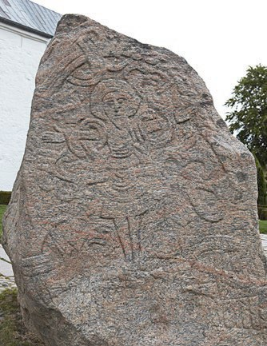

1.1 – INDLEDNING
sidde 05
Kapitel 1 Danmarks historie
Det danske samfund har rødder, der rækker langt tilbage i tiden. Danmarks historie er vigtig at kende for at forstå det danske samfund, som det ser ud i dag. Velfærdssamfundet, det politiske system, økonomien, kulturen og hverdagslivet er alle resultater af en lang historisk udvikling.
Danmark har i størstedelen af sin historie været en magtfaktor i Norden og omkring Østersøen og har bestået af mange forskellige befolkningsgrupper, men er gradvist blevet reduceret til en småstat med en forholdsvis ensartet befolkning.
Den danske stat har eksisteret som selvstændig stat uden afbrydelser i over 1.000 år, og det er ret enestående set i et internationalt perspektiv. Danmark har gennem sin lange historie haft flere forskellige styreformer. Selv om alle styreformer har haft monarkiet som statsform, har kongemagten spillet meget forskellige roller gennem tiden.
Læremateriale Til Indfødsretsprøven
sidde 06
I dag er kongen stadig formelt landets statsoverhoved, men det er de folkevalgte politikere, der har den politiske magt i Danmark.
I dette kapitel gives et overblik over nogle af de historiske begivenheder og epoker, der har haft stor betydning for Danmarks udvikling frem til i dag. Det er ikke en fuldstændig og udtømmende Danmarkshistorie. Formålet er at beskrive de historiske hovedtræk og tendenser, der har sammenhæng med de fire centrale temaer, der gennemgås i de efterfølgende kapitler:
• Det danske demokrati • Den danske økonomi • Danmark og omverdenen • Dansk kulturliv • Temaopslag
Når der i lærematerialet efter en person er nævnt årstal i parentes, angiver det for konger eller dronninger deres regeringstid, mens årstallene for andre personer angiver deres levetid. Som eksempler kan nævnes Frederik 3. (164870), der regerede fra 1648 til 1670 og Karen Blixen (1885-1962), der levede fra 1885 til 1962.Den store Jellingsten blev rejst af Harald Blåtand cirka 965.
Den store Jellingsten blev rejst af kong Harald Blåtand cirka 965.
Læremateriale Til Indfødsretsprøven

Fonte: Læremateriale til Indfødsretsprøven, SIRI.